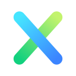

xrun本机设备
准备连接
检查状态正在读取本机状态…
- 设备 ID
请在系统设置 → 通用 → 登录项中允许 xrun，然后点击启动服务。
当前使用 CLI 安装的服务。停止后再次启动，即可迁移到 App 的后台服务。
加入已有部署
在已加入的设备上运行 xrun invite，把邀请链接粘贴到这里。
设备与访问权限
允许的设备可以用本机用户的权限执行命令、传输文件和截图。
点击刷新查看设备。
隐藏图标再次打开 xrun，图标和窗口就会恢复
移除后台服务保留设备身份、权限和任务记录